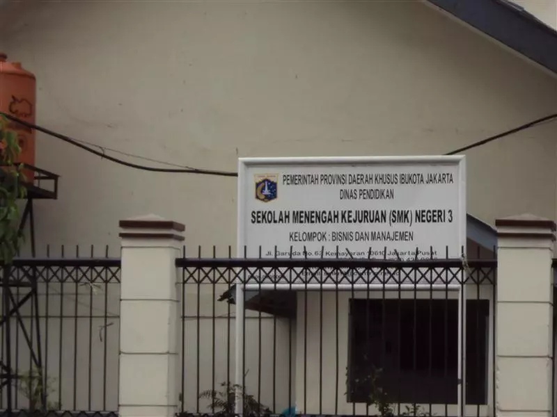

Perjalanan Panjang SMK Negeri 3 Jakarta dalam mencetak generasi unggul sejak 1952.

SMK Negeri 3 Jakarta telah melalui perjalanan panjang mulai dari sekolah swasta hingga menjadi sekolah negeri yang terus berkontribusi bagi dunia pendidikan vokasi di Indonesia. Berikut adalah tonggak penting perjalanan kami.
Berdiri di Jalan Pegangsaan Timur No. 1A pada tahun 1952 dengan pimpinan pertama seorang Pegawai Tinggi Kementerian PPK yaitu Bapak Drs. T.D. Situmorang.
Berdasarkan S.K. Menteri PPK No. 3707/B 3 Kedj/54 Tanggal 3 Juli 1954, SMEA Swasta Perguruan Pegangsaan Timur dinegerikan menjadi SMEA Negeri 2 Bagian Koperasi.
Pada Juli 1955 SMEA Negeri 2 Bagian Koperasi dipindahkan ke lokasi Jalan Batu III Gambir menempati Gedung Yayasan Raden Saleh bersama-sama dengan SMA IV/C (SMA Negeri 4 Jakarta).
Pada tanggal 1 Oktober 1969, SMEA Negeri 2 Bagian Koperasi dihilangkan Bagian Koperasinya menjadi SMEA Negeri 2 Jakarta.
Dengan SK. Gubernur No. 738/7/73 tanggal 19-4-1973, SMEA Negeri 2 Jakarta dipindahkan ke gedung baru di Jalan Cilacap No. 5, Menteng, Jakarta Pusat. Penggunaannya bersama dengan SMA Swasta API. Pagi digunakan oleh SMEA Negeri 2 Jakarta, siang digunakan oleh SMA Swasta API.
Pada tanggal 4 Juli 1994, SMEA Negeri 2 Jakarta secara resmi menempati gedung SMT Negeri Grafika secara keseluruhan, yang sebelumnya menempatinya secara bertahap mulai dari tahun pelajaran 1991-1992. Gedung ini beralamat di Jalan Garuda No. 63, Kemayoran, Jakarta Pusat.
Berdasarkan SK. Mendikbud 036/0/1997 tanggal 7 Maret 1997, nama SMEA Negeri 2 Jakarta berubah menjadi SMK Negeri 3 Jakarta hingga saat ini.